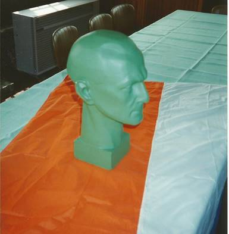
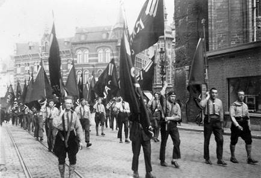
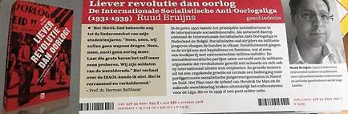

> nieuwsbrief > JAAR 2018 - nr.4

‘Kop’
Joris van Severen geboetseerd door Jef Boudens
Laatste
herinnering inzake hernieuwen ledenbijdrage voor 2018
Toetreden
kan nog steeds, mits overboeking van de ledenbijdrage. Even
herinneren: de minimumbijdrage blijft ongewijzigd en bedraagt
29 €. In ruil daarvoor verzekeren we u de stipte toezending
van het nieuwe Jaarboek
Joris van Severen – het 22e al – in de meimaand en van
de vier nummers van ons kwartaalblad Nieuwsbrief Joris van
Severen. Vanaf het bedrag van 35 € boeken we u met dank
als steunend lid. Vereffening graag via onze rekening IBAN:
BE71 0001 7058 1469 – BIC: BPOTBEB1 t.n.v. Studie-centrum
Joris van Severen, Paddevijverstraat 2, 8900 Ieper.
Het
bloemstuk namens de Stichting Joris van Severen, aan het
graf te Abbeville in mei 2018

Onze jaarboekmedewerker Ruud
Bruijns heeft jarenlang onderzoek gedaan naar deze gezworen
vijanden van het Verdinaso, waarbij hij stad en land heeft
afgereisd om archieven te bezoeken in Nederland en
Vlaanderen. Het resultaat is een boek over de Liga in
Vlaanderen en Nederland, waarin veel nieuwe inzichten aan
het licht zijn gekomen. Zo wordt er ingegaan op de betekenis
van het antimilitarisme in de sociaaldemocratie, het
ontstaan van de Liga en de connecties met de IJzerbedevaart,
de oorsprong van de militie-vorming en het antifascisme, de
inplanting in Nederland en de uiteindelijke breuk met de
sociaaldemocratie in 1934/1935. Het is de meest complete
geschiedenis van deze bijna vergeten beweging tot zover.
Er wordt in het boek uiteraard
worden ingegaan op hardnekkige mythes aangaande de relatie
met het Verdinaso, zoals de vermeende rol bij de zaalslag in
Antwerpen in 1932, de geplande landdag in Mechelen in 1933,
en het vermeende fascistische gevaar in Vlaanderen dat er in
werkelijkheid niet was. Er wordt ook aandacht besteed aan de
vormentaal van de Liga, die opmerkelijke vertoonde met het
Verdinaso, zoals uniform-dracht, vaandels en optochten. Er
was een opmerkelijke zucht naar orde en tucht voor een
zelfverklaarde linkse beweging. Als laatste maar niet
onbelangrijke vondst is er de toenadering van
Liga-kopstukken Liebaers en War van Overstraeten aan het
adres van Joris van Severen.
Het boek van Ruud Bruijns draagt
als titel 'Liever
revolutie dan oorlog' en zal in oktober dit jaar wordt
uitgegeven door Uitgeverij Vrijdag (ISBN 978 94 6001 699 8).
De kostprijs bedraagt 24,95 Euro. Er is een webpagina met
nieuws, achtergronden en aankondigingen betreffende dit boek:
https://www.facebook.com/LigaBoek

Politieke
strategie en/of opportunisme?
Karl Drabbe, op Doorbraak, dd. 15 juli 2018
Het broodje-aapverhaal is
bekend. Van Severen en zijn Verdinaso-militanten
marcheren in colonne in een Vlaamse stad, de Vlaamse
Leeuw voorop. Twee VNV’ers zitten op een terras en
stoten elkaar aan. ‘Die Van Severen, die is in staat om
zijn militanten achter gelijk welke vlag te laten lopen.’ Si non e vero, e
ben trovato’. Want een paar jaar de oprichting van
zijn Verbond van Dietsche Nationaal Solidaristen
(Verdinaso) neemt Van Severen afscheid van het
Vlaams-nationalisme. Met de zogenaamde Nieuwe
Marsrichting zet hij zijn beweging op het spoor van
Heel-Nederland, zeg maar de huidige Benelux en
Nord-Pas-de-Calais. Een ‘hereniging’ van de historische
Zeventien Provinciën, dus mét Friezen, Luxemburgers en …
Walen. Het kostte hem weinig krediet, maar wel
rechterhanden als Wies
Moens en Ward
Hermans.
Wat de impact van die Nieuwe
Marsrichting betekent voor Franstalig België is nooit eerder
grondig onderzocht. Een licentiaatsthesis uit 1982
uitgezonderd, moest historicus Ruud Bruijns vooral
terugvallen op de Dinaso-pers om een beeld te vormen van het
Franstalige Verdinaso. En dat deed hij weergaloos.
Conclusie: het stelde allemaal niet veel voor. De vraag
stelt zich dan: wat bewoog ‘Leider’ Van Severen tot de
ommezwaai?
In een helder gestructureerd artikel
in het jongste – 22ste –Jaarboek
Joris van Severen onderzoekt Bruijns de
relatie van het Verdinaso tot Franstalige rechts-radicale en
fascistoïde bewegingen. Achtereenvolgens komen het Nationaal
Legioen en Rex aan bod, en nationaal-conservatieven in de
Katholieke Partij. Ook de verhouding van de Waalse
(wallingantische) beweging tot Van Severens
liefdesverklaringen komt aan bod. Bruijns onderzoekt ook de
inplanting van Verdinaso-afdelingen in Franstalig België, en
de contacten met de Franstalige adel. Tot slot gaat hij na hoe
de Dinaso’s zich opstelden na de moord op Van Severen in mei
1940.
Vóór de Tweede Wereldoorlog waren het
fascistische Légion national (LN) en Rex niet op één lijn met
het Verdinaso. De ‘utopische’ hereniging van de Lage Landen
stond samenwerking in de weg. LN en Rex stelden zich voor
alles als belgicistisch op. Ze combineerde de liefde voor de
tricolore met even reactionaire denkbeelden, maar verder ging
het niet. De Nieuwe Marsrichting maakte daarin geen verschil.
Bruijns spreekt zelf van ‘de slechte verhouding tussen Rex en
het Verdinaso’, wat die laatste ingaf om bij Degrelles strijd
tegen Van Zeeland in 1937 op te roepen blanco te stemmen. Kort
na Degrelles nederlaag werd het Franstalige Dinasoblad L’Ordre thiois
zelfs opgedoekt… Missie geslaagd? Naar het waarom dient nog
onderzoek gevoerd.
Binnen de Katholieke Partij waren
er wel enkele conservatieve stemmen, zoals senator en
Defensieminister Paul Crokaert, die hun sympathie voor Van
Severen niet onder stoelen of banken staken. De Nieuwe
Marsrichting hielp daarbij; het Verdinaso was plots niet
meer staatsgevaarlijk… Van Severens pleidooien voor een
neutraliteitspolitiek, hielpen daar uiteraard bij. Franstalig
Belgische adel raakte gecharmeerd door Van Severens
Nieuwe Marsrichting. Ze koppelde er wat
graag een provinciaal federalisme aan vast, als tegenpool
voor een Belgisch federalisme op basis van de
gemeenschappen. In Vlaams-katholieke en -nationalistische
en Waalse socialistische kringen werd de roep om
federalisme steeds luider. De Franstalige elite – niet het
minst in Luxemburg – zag in het provinciale federalisme
van o.a. Pierre Nothomb een werkbaar alternatief.
De Waalse beweging stond – net als
Franstalig belgicistisch rechts – zeer wantrouwig tegenover de
pro-Waalse liefdesverklaring van het Verdinaso. Bruijns licht
niet het doopceel van de verenigingen en tijdschriften die hij
citeert. Wat jammer is, want het is veelzeggend dat die allen
behoorlijk links/socialistisch waren. In het zuiden van het
land gingen socialisme en regionalisme hand in hand. Een
unitair tot Heel-Nederlands pleidooi kon er op weinig begrip
rekenen. Behalve bij de unitaristische leerkracht Louis
Gueuning van het kleine tijdschrift La Renaissance wallonne.
Die zou vooral na de Tweede Wereldoorlog blijven werken aan de
gedachtenis van Van Severen en zijn nationaal-solidarisme.
Omdat er absoluut geen
congruentie was tussen de Nieuwe Marsrichting met haar
Belgisch unitarisme en het concept ‘Wallonië’,
sprak men in het Verdinaso voortaan van de Romaanse
gewesten of gouwen. ‘Wallonië’ was uit den boze,
net als Vlaanderen, tenzij dan in zijn historische
betekenis. (Volgens de Dinaso’s was het Waals zelfs een
Germaanse taal die geen uitstaans had met het Frans; we
weten wel beter.)
Tijdens de oorlog zou er in Rex toch wel
enige sympathie voor het Verdinaso doordringen. Bruno Cheyns
heeft in zijn
Degrelle-biografie al aangetoond welke ideologische
sprongetjes Degrelle maakte tijdens Wereldoorlog II. Ook de
jongerenbeweging was er gevoelig voor. Zij veranderde de naam
van Jeunesse Rexiste Masculine in Jeunesse
Nationale-Solidariste, om wat later te evolueren naar Jeunesse
Nationale-Socialiste (JNS). De jeugdbeweging organiseerde een
‘Campe-école des 17 provinces’ en Degrelle toverde het
Bourgondische kruis uit zijn mouw om – naast de Belgische vlag
– op de mouw van de Franstalige Oostfrontstrijders te spelden.
De balans leert dat er hoop en al
weinig Franstalige Verdinaso-afdelingen waren, eerder in
kleine gemeenten actief waren, en soms een belachelijk laag
aantal leden had (Verviers: 3 of 4). Naar het
lezerspubliek van de Franstalige Dinaso-bladen als L’ordre
thiois of Pays-Bas
Belgiques heeft Bruijns niet gepeild. Er is
dus nog ruimte voor onderzoek
Na de dood van Van Severen verspreidden de Franstalige
aanhangers zich al net als de Vlaamse over collaboratie,
verzet en neutraliteit. De eersten kwamen bij Rex terecht
– ze moesten wel van de nazi-bezetter. Verzetslui komen we
tegen in de clandestiene pers of bij het Geheim Leger. Zou
er niemand bij de extreemrechtse verzetsorganisatie
Koninklijke Nationale Beweging terechtgekomen zijn, vraag
ik me af.
De vraag stelt zich dan wáárom Van
Severen de moeite nam om een utopisch ideaal van een
Heel-Nederland tot het zijne en dat van zijn beweging te
maken? En dat nog geen drie jaar na de oprichting van zijn
Verdinaso? In Franstalig België bestond er immers weinig
animo. Rechts-autoritaire ideeën sloegen er wel aan, zelfs bij
de Brusselse en Luxemburgse elite. Maar die Zeventien
provinciën? Daar liep niemand warm voor.
Al in het begin van zijn artikel
schuift Ruud Bruijns een plausibele reden naar voren. Een
reden die door diehard
oud- en neo-Dinaso’s ongetwijfeld zal gepareerd worden, maar
die mogelijk is. Bruijns: ‘het is waarschijnlijker dat Van
Severen wilde ontkomen aan de overheids-vervolging die zijn
beweging boven het hoofd hing.’ De Belgische regering legde
immers de financiering droog van de Dinaso-vakbond (Verbond
van Nationale Arbeiderssyndicaten) en ‘de Dietse Militie werd
bedreigd door een uniformverbod’. ‘De Belgische regering zag
zijn rechts-revolutionaire beweging als een bedreiging voor de
landseenheid en om aan deze toorn van de overheid te
ontsnappen moest Van Severen de scherpe kantjes van het
Verdinaso afvijlen.’ Daarom koos hij voor een unitair België
in een Diets Rijk. De ontbinding van België
liet hij dus achterwege voor politiek opportunisme eerder
dan voor een nieuwe politieke strategie…
Een Verder in dit jaarboek het slot
van Romain Vanlandschoots biografie 1917-1927 van Van
Severen, een boeiende bijdrage van Doorbraak-medewerker
Pieter
Jan Verstraete over de Nederlandse fascistische schilder
Pyke Koch en het script van een toneelstuk van Antoon van
Vlemmeren over Joris van Severen. Dat dat laatste context
noch datering kreeg, is te betreuren. Een artikel waarin het
organisch-universeel elitair corporatisme van de Duitse
conservatief-revolutionaire socioloog Othman Spann wordt
gelinkt aan het nationaalsolidarisme van Van Severen
levert een nieuwe inkijk op de ideologische
inspiratiebronnen van die laatste. Die waren immers niet
enkel Frans, stelt auteur Maurits Cailliau, ze duiden ook
aan hoe ver Van Severen stond van het Duitse
nationaalsocialisme. Met dit jaarboek staan we weer wat
verder in de studie van en over Joris van Severen en het
Verdinaso. Het is echter nog steeds wachten op de grote
biografie. Het
Jaarboek Joris van Severen kost 35 € – leden
Studiecentrum 29 € - en is verkrijgbaar via maurits.caillau@skynet.be. Meer
info via: www.jorisvanseveren.org.
______________
Bron: https://doorbraak.be/het-verdinaso-in-wallonie/
Hoe de lectuur van
deze jaarboekbijdrage, afhankelijk van het uitgangspunt van de
lezer, hoogst verschillend kan gepercipieerd worden… Bij Karl
Drabbe leidde dit tot de conclusie dat het Verdinaso en de
Heel-Nederlandse optiek die het huldigde, in het Franstalig
landsgedeelte een eerder elitaire bedoening is gebleven en al
bij al niet veel zaaks blijkt geweest te zijn. Bij anderen
bracht dezelfde bijdrage dan weer verder reikende en
verrijkende informatie aan over een onderwerp dat, o.l.v.
prof. F. Balace, voorheen al stof geleverd had voor een
Franstalige universitair thesiswerk - informatie bovendien die
ten dele aansloot op een eerdere jaarboekbijdrage over de
verhoudingen tussen Joris van Severen en de ‘hogere kringen’,
die Ruud Bruijns bewust buiten de context van zijn studie
liet.1
Het is vanzelfsprekend
het goed recht van de Doorbraak-auteur
om de bestrevingen van Joris van Severen en zijn Verdinaso tot
een “een utopisch ideaal van een Heel-Nederland” te
bestempelen, om dan even verder te verduidelijken dat Van
Severen “zijn beweging op het spoor zette van Heel-Nederland,
zeg maar de huidige Benelux” die dan klaarblijkelijk – en
terecht! – niet langer als “utopisch” bestempelt wordt. Of is
dit voor de Franstaligen veeleer een kwestie van groeiend
historisch bewustzijn geweest, die hen de Benelux-logica – het
samengaan van de Lage Landen – deed aanvaarden – en Joris van
Severen dus in zekere zin te vroeg gelijk had?
Eenzelfde haperende
gedachtegang stellen we vast waar de auteur poneert dat Van
Severen “koos hij voor een unitair België in een Diets Rijk”
en even verderop terecht opmerkt dat “Franstalige adel
gecharmeerd werd door de Nieuwe marsrichting waaraan ze
provinciaal federalisme aan vast koppelde, als tegenpool voor
een Belgisch federalisme op basis van de gemeenschappen”.
Van Severen opteerde
derhalve niet voor een unitair België maar wel voor een
meerledig federalisme op basis van de provincies – de
evenzovele historische entiteiten van waaruit de Nederlanden
tot hun eenheid gegroeid waren. Waarin hij geen heil zag was
een tweeledig federalisme dat louter en alleen berustte op de
taaldualiteit.
Tot
slot misschien nog even terugkomen op de ondertitel “Strategie
en/of opportunisme” in de Doorbraak-titel.
Naast het door Ruud Bruijns aangehaalde anticiperen op de er
aankomende strafrechtelijke Belgische oekazes en de door Vik
Eggermont hieronder vernoemde Europese dimensie heeft niet het
minst ook het zich verdiepen in de geschiedenis van onze
Nederlanden een primordiale rol gespeeld bij Van Severen in
het ‘uitrollen’ van de Nieuwe marsrichting. Hoe zwaar deze
elementen in de evolutie wogen zal wel afgehangen hebben van
het concrete moment maar zeker is dat de historische
motivering een steeds belangrijkere rol is gaan spelen in zijn
discours. Er zijn namelijk meerdere “nieuwe marsrichtingen”
geweest!
Er
ontbreekt
mijns inziens, stelt Eggermont, toch nog heel wat aan dit Doorbraak-artikel.
Dat Van Severen met zijn Nieuwe marsrichting meteen blijk had
gegeven een totaal nieuw concept ontdekt te hebben, daar wordt
klaarblijkelijk niet aan gedacht. Ik zou zeggen: hij kwam op
het spoor van een Europese dimensie die de Vlaamse beweging
niet kende. Daarvoor was ze te kleinburgerlijk. Anders gezegd:
hij toonde een groei in politiek inzicht, maar nogmaals: dat
schijnt bij de auteur (en uiteraard ook bij de doorsnee Doorbraak-lezer) niet
in gedachten te komen. De huidige rampzalige situatie in
Europa toont nochtans duidelijk aan hoe noodzakelijk die
Nieuwe marsrichting (ook nu nog) is.
Even misschien nog de
‘Genesis’ schetsen van de evolutie die Van Severen tot de
(eerste) Nieuwe marsrichting bracht. Uit z’n bureelagenda
sprokkelden we volgende fragmenten die daar rechtstreeks mee
verband houden:
30/7/1934:
Vergadering met Emiel Thiers, Pol van Herzele, Arie van der
Horst. Wies Moens is weer afwezig. Bespreking nieuwe methode:
Bourgondië.
2/8/1934:
Naar Alveringem. Dag met Cyriel Verschaeve. Heerlijke uren.
Rob van der Schelden vergezelt mij. Verschaeve zegt tweemaal:
"Ik zie u zo geern Georges - ik zie u nog veel liever dan
vroeger." Hij is het volkomen eens met mijn plan-methode:
Rijks Nederland + geheel België (Bourgondië). Volkomen en
spontaan.
10/8/1934:
Voormiddag bezoek van Renynghe de Voxvrie. Ik spreek hem over
mijn plan m.b.t. nieuwe marsrichting. Hij verklaart mij dat
hij zich overal als Dinaso uitgeeft.
1/9/1934:
Thuis. Namiddag, Maurits Geerardyn verklaart zich akkoord met
de nieuwe marsrichting.
Verderop in z’n agenda
komt dit onderwerp nergens nog ter sprake; dat was
klaarblijkelijk een uitgemaakte zaak. In het openbaar bracht
Joris van Severen zijn gewijzigde inzichten en de erin
vervatte nieuwe strategie te berde in z’n redes
respectievelijk gehouden te Kemzeke (14 juli 1934) en even
later te Izegem (20 oogst 1934). In een latere fase zou hij
zijn Nieuwe marsrichting, voornamelijk op basis van zijn
verdiept historisch inzicht, verder uitdiepen en vervolmaken.2
Ze zou haar definitieve neerslag krijgen in zijn rede De Vlaamse Beweging,
België en de gebondenheid der Nederlanden – De Dietse
Rijksgedachte van het Verdinaso, waarmee hij te
Sint-Niklaas de voordrachten-cyclus van het ‘Comité voor
politieke en sociaaleconomische voorlichting’ afsloot, nadat
vόór hem Leo van der Essen, Frans van Cauwelaert, Tony Herbert
en graaf Louis de Lichtervelde daar het woord gevoerd hadden.3
Een laatste aanmerking: Othmar Spann was geen Duitse
maar wel een Oostenrijkse socioloog en denker. Niettemin dank
aan Doorbraak en de aandacht die er – ook al in het verleden –
besteed wordt aan onze publicaties. Daardoor wordt het meteen
ook mogelijk desgevallend enkele aspecten nader toe te lichten
en te verduidelijken.
_______________
1
1 Alain
Mouton & Jef Werkers, ‘Joris van Severen en de “hogere
kringen”’, in Jaarboek
Joris van Severen 12, 2008, pp. 133-172.
2
2 Dit
evoluerend inzicht werd helder geschetst door Ward Kennes, ‘De
nationale visie van Joris van Severen’, in M. Cailliau (Ed.),
Joris van Severen
spreekt – Gedenkboek 1894-1994, pp. 227-268.
3
3 Deze
voordrachtencyclus werd naderhand gebundeld onder de titel Nieuwe richtlijnen,
Boekhandel-Uitgeverij Universum, Brussel.
De E.H. Gereon van Boeschoten (Dongen
(NL) 10 januari 1937 – Grimbergen 5 juli 2018), norbertijn
van de abdij van Grimbergen en Ere-prelaat van het prioraat
van de Lage Landen van de Orde van de Hospitaalridders van
Sint-Jan van Jeruzalem Hij was sinds jaar en dag
lid van het Studiecentrum Joris van Severen
Uit: ‘De wereld van Pyke Koch’
Samengelezen
door Sjors Remerswaal
Behalve in
het hiervoor geschetste artistieke milieu van literatoren en
kunstenaars bewoog Koch zich actief in het politieke milieu
van het Nederlands fascisme. Op 25 juni 1934 sloot hij zich
aan bij het Verbond van Dietse Nationaal-Solidaristen
(Verdinaso) en ontpopte zich tot een overtuigd pleitbezorger
van de idealen van dit verbond. Toen het Verdinaso op 9
november 1940 opging in de Nationaal-Socialistische Beweging
in Nederland (NSB), werd hij automatisch lid van die partij.
Eind april 1941 liet hij zich uitschrijven, wat medio mei zijn
beslag kreeg. Interessant is te zien hoe Kochs politieke
betrokkenheid zich ontwikkelde en welke vorm die aannam, ook
in zijn werk. (blz. 43). Daarnaast had via het Diets
Studentenverbond (DSV) de ´Groot-Nederlandse´ of ´Dietse´
gedachte vat gekregen op een deel van de studentenwereld. Dit
verbond, dat op 1 juli 1922 in Utrecht was opgericht, had tot
voornaamste doel Nederlandse en Vlaamse studenten te verenigen
ter bescherming en bevordering van de Dietse beschaving. In de
jaren dertig radicaliseerde een aantal (oud) leden van het
DSV. Zij werden lid van de NSB of sloten zich aan bij het
Verdinaso, dat ook in Utrecht een afdeling had. De
Groot-Nederlandse gedachte was een van de pijlers waarop het
Verdinaso was gegrondvest. Koch werd, zoals gezegd, op 25 juni
1934 lid van dit verbond. Niet bekend is of hij lid is geweest
van het DSV (blz 44). In 1934 koos Koch voor het Verbond van
Dietse Nationaal-Solidaristen, in de verwachting dat dat
gezelschap een meer verheven statuur had, meer 'houding',
zoals Koch het noemde.
Verbond van Dietse
Nationaal-Solidaristen
Het
Verdinaso was op 4 oktober 1931 gesticht door de Vlaamse
nationalist Joris van Severen (1894-1940). Het was op
para-militaristische leest geschoeid, met een dito
organisatiestructuur, uitrusting en rituelen. Leiders en leden
staken zich graag in uniform. Zij werden als daadkrachtig in
beeld gebracht. Het streven van Van Severen en de zijnen was
Nederland en België te verenigen in een corporatistisch
Dietsland. Het verbond had op zijn hoogtepunt in 1937 in
België zo'n 15.000 leden; in Nederland een kleine vijfhonderd.
Het
Verdinaso was uitgesproken antisemitisch, antidemocratisch en
antisocialistisch (en dan het socialisme van marxistische
signatuur). Antisemitisme was geen exclusief kenmerk van het
verbond. Het was een wijd verbreid bestanddeel van de Europese
cultuur, zeker in dit tijdsgewricht. In Zetten - om een
voorbeeld te geven uit de wereld van Koch - had de leiding van
het internaat uitingen van antisemitisme weliswaar niet
gestimuleerd, maar wel gedoogd. Kochs antisemitisme was
selectief. Geassimileerde joden met verdiensten voor de
wetenschap of cultuur, zoals Freud en Einstein, beoordeelde
hij als gelijken. De anderen niet. Vermoedelijke deelde hij
het Verdinaso-standpunt in dezen. Joden die zich in uiterlijk
en gebruiken onderscheiden van de rest van de bevolking,
pasten niet in het beeld van de 'Dietse' beschaving, die een
culturele eenheid veronderstelde. In Hier Dinaso! wordt
herhaaldelijk gewaarschuwd voor de 'verjoodsing' van de
samenleving onder meer door joodse functionarissen die
invloedrijke posities bekleedden, in het universitair
onderwijs of in de rechtelijker macht, met naam en toenaam te
noemen. Ook de onevenredig grote vertegenwoordiging van joden
in de belangrijkste sectoren van economie en maatschappij -
banken en kranten - was een bron van expliciete ergernis voor
de Nationaal-Solidaristen.
Wat het
antidemocratisch standpunt betreft, de leus van het Verdinaso
zegt genoeg: 'Autoritaire Staat, Corporatieve Orde'. Niet het
volk maakt de dienst uit, maar de besten van het volk, de
'aristocratie', overeenkomstig de oorspronkelijke betekenis
van het woord:
"Niet aan
de massa en hare vleiers komt de heerschappij toe, maar aan de
keurploeg van een volk, aan de elite, aan de verscheidene
aristocratieën van ene naties, voor zover zij hunne taak
begrijpen en volbrengen die er ene is van alleredelsten
dienst.
de
aristocratie van het bloed;
de
aristocratie van het verstand en van den nauwgezette arbeid;
de
aristocratie der waarachtige wellevendheid;
de
militaire aristocratie, en in het komende Rijk, de
aristocratie van de Dinaso-Militanten-Orde en van de DPO
(Dinaso Propaganda Orde.)” Koch was het daarmee eens. Hij had,
net als vele anderen van zijn en voorgaande generaties, de
mond vol van 'aristocraat' en 'aristocratisch'. Als lid van de
culturele en sociale elite voelde ook hij zich bedreigd door
de democratie, uitvloeisel van de toenemende industrialisatie,
waarin de gevreesde burgerlijke mentaliteit en middelmaat de
scepter zwaaiden, en maakte zich op waarden als adel van geest
en beschaving te verdediggen.
(....)
Mede vanwege een andere voorstelling van wie nu de besten
waren, en dus aangewezen om de staat te leiden, keerde het
Verdinaso zich tegen de Nationaal-Socialistische Beweging van
ir. Anton Mussert (1894-1946) en Kees van Geelkerken
(1901-1976).
'Onze idealen'
Koch staat
vanaf 25 juni 1934 geregistreerd als lid van het Verdinaso.
Dat hij als lid ook actief was blijkt uit zijn brief van april
1936 aan Voorhoeve. De aanleiding om de pen op te pakken was
een in zijn ogen mislukte propaganda-avond in Utrecht: zaal en
spreker - dichter en schrijven Henri Bruning (1900-1983) -
waren onder de maat geweest. Kochs frustratie was des te
groter omdat hij juist op die avond een van zijn vrienden, de
dichter Martinus Nijhoff (1894-1953), zover had gekregen hem
te vergezellen in de hoop hem te winnen voor de
verbondsidealen: "M. Nijhoff met wie ik nu jaar en dag
gevochten heb over wat ik 'onze idealen' wil noemen, en die ik
nu eindelijk voor de eerste maal ertoe had gekregen, een stem
uit 't Dinaso zelf te horen, die zei me, nou daarover hoef je
in elk geval niet lang te piekeren - ideologie daargelaten -
de leiders deugen in geen geval. Wou je mij inviteren achter
een leider te gaan staan die een zo kleine beweging blijkbaar
al niet kan overzien want: die zo'n snert-spreker (...)
loslaat op mensen die hij wil winnen voor z'n beweging?
(...)"Toen een reactie van Voorhoeve uitbleef, stuurde Koch
zijn colporteurs-uitrustig terug. Daarop reageerde Voorhoeve
wel per kerende post: hij zei het mislukt-zijn van de
propaganda-avond te betreuren: "Bruning zei mij later, niet in
orde te zijn geweest."
Totdat het
verbond op 9 november 1940 opging in de NSB bleef Koch zich -
met tussenpozen vanwege langdurige verblijven in het
buitenland - inzetten voor het Verdinaso: "Kan je (Voorhoeve)
met propaganda materiaal zenden om een bijeenkomst in Utrecht
voor te bereiden. Ik geloof dat daarvoor wel een klein maar
intelligent publiek te mobiliseren is - vnl. doctoren,
juristen e.d. Maar het is noodzakelijk dat ik beschik over een
'verse' beginsel verklaring - Kan je er niet een opstellen,
die we dan samen (jij Br[uning] en ik) even bespreken. Met een
gedurfde fiere doelbewuste actie zouden duizenden te
overtuigen zijn geloof ik" (blz. 51).
Elsseneur
Begin 1937
breidde Koch op verzoek van Voorhoeve zijn activiteiten uit,
door voor Hier Dinaso!
te gaan schrijven. Hij zag de uitnodiging waarschijnlijk als
een gelegenheid om zijn talent als publicist te beproeven en
zijn stem te laten horen. (...) Op 13 maart 1937 debuteerde
Koch in Hier Dinaso!
met ‘De uitgeweken
Duitsche schrijver Thomas Mann'; een week later
verscheen 'André Gide’s
Retour de l’USSR’.
Hij
publiceerde niet onder eigen naam, maar onder het pseudoniem
Elsseneur, een personage uit Les Chants de Maldoror van Lautréamont een van
zijn favoriete literaire werken. In ‘De uitgeweken Duitsche
schrijver Thomas Mann’ roept Koch Mann tot de orde.
Aanleiding is het artikel over diens protestbrief aan de
filosofische faculteit van de universiteit van Bonn in De
Telegraaf van woensdag 20 januari 1937, onder de titel
‘Thomas Mann's antwoord
aan Duitschland. Waardig pleidooi voor rede en vrede'.
Manns, in de ogen van Koch, aanval op Duitsland volgde op het
intrekken van zijn eredoctoraten, een maatregel waartoe was
overgegaan nadat hem op 19 december 1936 het Duitse
staatsburgerschap was ontnomen. Hypocriet noemt Koch het dat
"zijne literaire hoogheid Thomas Mann", nu wel in (blz. 53) de
pen klimt, terwijl hij in de vier jaar dat hij in vrijwillige
ballingschap is zijn stem niet heeft laten horen ten gunste
van het Duitse volk: "Nu z'n eigen huid geraakt is - nu is 't
wel de tijd om vanuit een vijandig nabuurland 'de stem der
beschaving' te laten klinken." Koch probeert Manns aanval te
ontkrachten door te wijzen op de willekeur van zijn verwijten:
waarom verwijt hij alleen Duitsland zich zwaar te bewapenen:
"een tot de tanden gewapend Frankrijk heeft U nooit
gehinderd." Ook Italië en Rusland zijn zwaarder bewapend dan
Duitsland. In reactie op Manns uitspraak over zijn plicht als
kunstenaar stelt Koch ook een meer algemeen punt aan de orde:
de functie van de kunstenaar in de staat. In 1940 zal hij
daarop terugkomen, maar dan als pleitbezorger van het kunst-
en cultuurbeleid van het nationaalsocialistische regime. In Hier
Dinaso! stelt Koch dat kunst en staatsideologie
gescheiden wegen moeten gaan. Waar het toe leidt wanneer dat
niet het geval is wordt in Rusland gedemonstreerd: "We zien
hier dat de Sovjetstaat van zijn schrijvers eist dat ze
tendens schrijven - positief dus - in dienst van het regiem en
deszelfs ideologie, zoals dit, op het moment, de lijn
uitstippelt; en dus, niet allereerst in dienst van hun genie."
In de toekomstige Nationaal-solidaristische Staat mag dat
nooit het geval zijn: "Van de kunstenaar zal slechts geëist
moeten worden, dat hij zich niet op het terrein van de
politiek begeeft of het gezag van den Leider ondermijnt." "En
zelfs dit verbod zou men niet te ruim moeten opvatten",
vervolgt Koch zijn credo met vermoedelijk ook zijn 'hard
boiled' wijven Mercedes de Barcelona (1930), Bertha
van Antwerpen (1931) en de vrouw in De schiettent (1931)
in gedachten [afb. 8,9 en p.34], want: "dat b.v. de staat zich
baseert op huwelijk en gezin mag zeker geen reden zijn om van
de schrijver een verheerlijking van het gezin en het huwelijk
als zodanig te gaan eisen [...]. Een staat die de kunstenaar
zou verbieden de hevige conflicten, de grote zonden, de morele
nederlagen van zijn objecten in zijn werk te betrekken [...]
en autoritair zou bepalen: 'wij hebben aan dergelijk werk geen
behoefte', begaat een fout, die leidt tot ellendige,
burgerlijke vervlakking." Immers: "Nooit heeft de waarlijk
grote kunst een nationale tendens gehad. " in 'André Gide's ‘Retour de l'URSS'
stelt hij, geheel en al in lijn met het rabiate
anti-bolsjewisme van het Verdinaso, via Gide’s bekering tot
het communisme het in alle opzichten falen van het Russische
communistische staatsbestel in felle bewoordingen aan de orde.
Voorhoeves
uitnodiging om zijn werk in Hier Dinaso! te laten
bespreken, wees hij af, bij gebrek aan nieuw en actueel werk:
"[...] laat ik beginnen met te zegen dat ik het zeer vererend
vind dat een journal d'attaque, plaats zou inruimen aan de
bespreking van mijn werk. Er is echter geen foto (van werk)
waar ook nog maar een kraak van nieuwheid of actualiteit aan
is. [...] Over twee jaar hoop ik enige grote doeken af te
hebben, bij leven en welzijn, waarvan het me een groot plezier
zal doen, ze 't eerst besproken en gereproduceerd te zien in
'Hier Dinaso'" (blz. 55).
De nieuwe orde
Toen ook
Nederland bezet was, moest het Verdinaso zich bezinnen op zijn
toekomst: had het wel een toekomst? De opties waren: onder
voorwaarden opgaan in de NSB of van het politieke toneel
verdwijnen. Koch staat geregistreerd op de lijsten van
genodigden en aanwezigen van de 'beperkte kadervergadering'
van het verbond op 10 oktober en 2 november 1940, toen
hierover gesproken moet zijn. Op 19 en 20 oktober besloot het
Verdinaso-kader onder leiding van Voorhoeve om de toetreding
tot de NSB goed te keuren. Op 9 november ging het verbond op
in de NSB en werd ook Koch automatisch lid van die partij.
Voorhoeve die een goedbetaalde baan als propagandaleider uit
de onderhandelingen met de NSB wist te slepen, probeerde ook
Bruning en Koch de organisatie binnen te loodsen: "De
navolgende functionarissen van Verdinaso zijn reeds als lid
der NSB toegetreden. Ik verzoek U, Uw bijzondere aandacht te
besteden aan hen en hen zo spoedig mogelijk in onze
organisatie in te schakelen. [...] P. Koch, Oude Gracht 231,
Utrecht, Functie Publicist." Bruning en Koch staan op de
lijst, die vervolgens op 23 februari 1940 werd samengesteld,
van uit te nodigen personen voor de bijeenkomsten van de
propaganda-afdeling. Deze afdeling werd geleid door Voorhoeve
en was gevestigd op Maliebaan 35 in Utrecht.
Voorhoeve’s
entree in de NSB stond overigens niet onder een goed
gesternte. De kritiek van het Verdinaso op de NSB werd door
Mussert niet vergeten. Vooral de toelating van joden bij de
Nationaal-Socialistische Beweging was beschimpt in Hier
Dinaso!, ook door Voorhoeve onder meer op 21 december
1935 onder de veelzeggende titel 'Mussert: Warhoofd of
Volksmisleider'. De wederzijdse animositeit won het
geregeld van het wederzijdse vertrouwen. In 1942 werd
Voorhoeve door Mussert strategisch ingezet als pion in het
getouwtrek tussen hemzelf en de secretaris-generaal van het
Departement van Volksvoorlichting en Kunsten, die filosoof
prof. dr. Tobie Goedewaagen (1895-1980), met de macht binnen
het DVK als inzet. Voorhoeve onttrok zich hieraan door zich
als vrijwilliger voor het Oostfront aan te melden. (blz. 60)
(...) In 'Over de kunst' had
hij, net als eerder in Hier Dinaso!, gewaarschuwd voor
het gevaar dat er bij de beoordeling van kunst meer op de
politieke boodschap, op de zogenoemde 'tendenz', wordt gelet
dat op het artistieke gehalte: "Ze [de staat] zal [...] op
gehalte moeten letten eerder dan op tendenz. [...] Wij zullen
ervoor moeten waken geen knoeiers of prutsers te gaan
protegeren omdat [...] hun politieke bedoelingen, goed zijn"
(blz. 68).
Toen Koch
begin 1947 werd opgeroepen zich voor verhoor te melden bij de
Politieke Recherche voor de Provincie Utrecht, reageerde hij
met de vraag, of het wel nodig was dat hij zou worden gehoord:
hij was immers geen lid geweest van de NSB. Hij verklaarde het
'misverstand' uit het feit dat de NSB de abonnees van Hier
Dinaso! in 1940 op haar ledenlijst en had bijgeschreven
(het lidmaatschap van Verdinaso ontkende hij ook; hij had
alleen een abonnement gehad op het partijorgaan). (...) Hij
achtte het mogelijk, dat Koch zonder zijn medeweten als lid
van het Verdinaso naar de NSB was overgeheveld. Dat zou ook
Voorhoeve verklaren: "De door U bedoelde Koch is mij bekend,
omdat hij lid van het Verdinaso was tot aan de fusie in
november 1940. Ik wist dat hij lid van het Verdinaso was,
omdat ik landelijk leider was." Hij ontkende dat Koch lid was
gewest van de NSB. Koch zou een van degenen zijn die zonder
hun toestemming te hebben verleend overgezet waren op de
ledenlijst van de NSB: "Ik weet met zekerheid dat Koch fel
gebeten was op de NSB en zeer verontwaardigd over het optreden
van de Duitsers. Dus is het volkomen uitgesloten dat hij lid
zou zijn geweest van de NSB. Waar de Duitsers uitgesproken
vijanden waren van de groot Nederlandse politiek van
Verdinaso, heeft Koch, voor zover daar ooit sprake van is
geweest, definitief een einde gemaakt aan zijn politieke
activiteit." Koch was hiermee een van de ruim 450.000
Nederlanders van wie na de bevrijding een dossier werd
aangelegd. Daarvan leidden ruim 165.000 dossiers tot
justitieel onderzoek. Vijf Bijzondere Rechtshoven
veroordeelden 14.652 mensen; negentien Tribunalen deden 49.920
uitspraken, waarvan 36.935 leidden tot internering. Omdat
Kochs verweer aannemelijk werd geacht, werd zijn zaak op 19
maart 1948 geseponeerd: "Voor abonnement 'Hier Dinaso' sec kan
worden geseponeerd" (blz. 79). (...) In Nederland had Koch
zich aangesloten bij zo'n rechtse club, het Verbond van
Dietsche Nationaal-Solidaristen, kortweg het Verdinaso. Hij
zette zich in voor zijn idealen. Mijns inziens droeg hij die
idealen ook uit door middel van zijn schilderkunst (blz. 85).
______________
Bron:
Boek, De wereld van
Pyke Koch - Andreas Koch, Roman Koot, Mieke Rijnders,
Marja Bosma – Wbooks, november 2017.